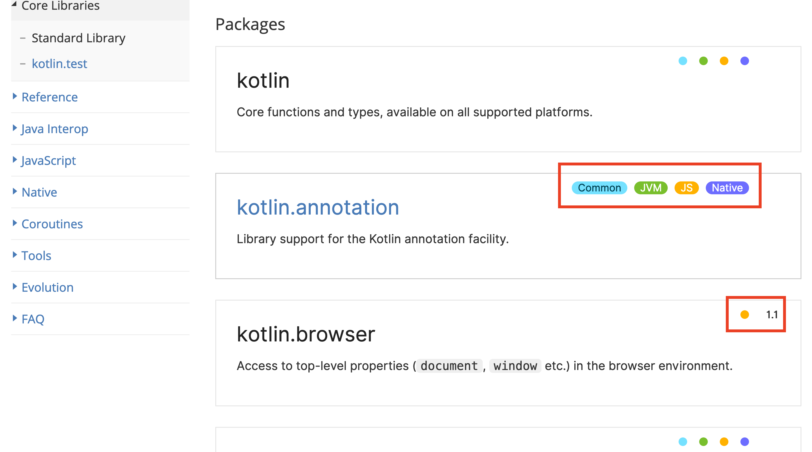

Поваренная книга
Kotlin Native / Multiplatform
Структура доклада
Вводная часть
Kotlin Native
Общий обзор технологии
Преобразование Kotlin в платформенный код C
Вызов нативных библиотек написанных на C из Kotlin кода
документация: Klib, многопоточность, тестирование
Структура доклада
Koltin MPP
Общий обзор методологии
Обзор библиотеки Kotlin Common
Создание клиент серверного приложения
Создание ядра приложения на Kotlin Common и реализация платформозависимых классов
Заключение
Владислав Верминский
aka: artglorin
Software engineer
Kotlin Native
Обзор Kotlin Native
Kotlin source
Koltinc compiler
LLVM
native compiler
bytecode
Обзор Kotlin Native
Java source
javac compiler
Java byte code
JVM
bytecode
Поддерживаемые компиляторы:
iOS (arm32, arm64, emulator x86_64)
MacOS (x86_64)
Android (arm32, arm64)
Windows (mingw x86_64)
Linux (x86_64, arm32, MIPS, MIPS little endian)
WebAssembly (wasm32) !!experemtal!!
Поддерживаемые компиляторы:
Java Byte code?!
JS?!
Взаимодействие с Native кодом
Компиляция Kotlin в Native код
Пререквизиты:
скачать/собрать kotlin-native compilator
загрузить код LLVM
Скомпилируем Kotlin код в нативный код, двумя способами:
без IDE
через Intellij Idea | gradle plugin
Вызов C метода из Kotlin
Пререквизиты:
Установить библиотеку с исходным кодом curl "libcurl4-openssl-dev"
скачать/собрать kotlin-native compilator
Выполним компиляцию моста через
cinteropдвумя способами:Без IDE
Intellij Idea | gradle plugin
Какие сложности возникают при вызове кода C из Kotlin?
необходимо иметь исходники кода библиотек;
скачать/скомпилировать kotlinс-native compiler;
код сгенерированный через cinterop выглядит ужасно;
нужен LLVM;
компиляция проходит долго.
Многопоточность
| http://kotlinlang.org/docs/reference/native/concurrency.html | |
|---|---|
|
|
Прочие темы
Неизменяемые данные http://kotlinlang.org/docs/reference/native/immutability.html
Обзор технологии Kotlin Native http://kotlinlang.org/docs/reference/native-overview.html
Klib http://kotlinlang.org/docs/reference/native/libraries.html
Платформенные библиотеки http://kotlinlang.org/docs/reference/native/platform_libs.html
Прочие темы
Cinterop http://kotlinlang.org/docs/reference/native/c_interop.html
Взаимодействие с Objective-C и Swift. http://kotlinlang.org/docs/reference/native/objc_interop.html
Описание gradle plugin. http://kotlinlang.org/docs/reference/native/gradle_plugin.html
Отладка Kotlin Native http://kotlinlang.org/docs/reference/native/debugging.html
Прочие темы
Github репозиторий Kotlin Native https://github.com/JetBrains/kotlin-native
Список частых вопросов и ответов. http://kotlinlang.org/docs/reference/native/faq.html
Kotlin Runtime
Каждый kotlin проект имеет kotlin runtime. Он подтягивается прямо или косвено.
На странице с документацией по Kotlin runtime можно найти польное описание пакетов, классов и методов с указанием того для какого рантайма они подходят.

Но могут быть различия в пакетах…
классах…
методах!
Kotlin common
Common – это не рантайм, это библиотека с набором классов и методов, для которых есть реализация на всех платформах.
Kotlin Multiplatform
| Библиотеки | Платформы |
|---|---|
• Kotlin Common | • iOS (arm32, arm64, emulator x86_64) |
Клиент-серверное приложение с использованием Kotlin MPP
Cтруктура проекта будет выглядеть так:
root_dir
|__common_module
| |__src
| | |__main
| | |__test
| build.gradle
|__backend_module
| |__src
| | |__main
| | |__test
| build.gralde
|__frontend_module
| |__src
| | |__main
| | |__test
| build.gralde
build.gradleПриложение с ядром написанным на Kotlin Common
Когда нужно вынести всю бизнес логику и доменную область в отдельный модуль, то для этого используется ключевые слова expected и actual
Заключение
Kotlin Native - это компиляторы и библиотеки для разработки на С/Objective-C/Swift
Koltin MPP - это подход к разработке осонванный на использовании библиотеки Kotlin-common
Заключение
Когда стоит писать на Kotlin Native?
Когда не стоит писать на Kotlin Native?
Стоит ли писать используя MPP подход?
СПАСИБО!